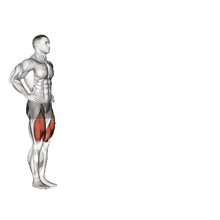

Walking Lunge
Walking Lunge mostra carga média e padrões de força como referência para pernas. Músculos principais: Quadríceps, Glúteo máximo.

Carga média: Intermediário
Referência para uma pessoa de nível intermediário.
Homens
139 lb
Mulheres
107 lb
Carga média de Walking Lunge [1RM]
| Nível | ||
|---|---|---|
| Iniciante | 6 lb | 41 lb |
| Novato | 49 lb | 70 lb |
| Intermediário | 139 lb | 107 lb |
| Avançado | 276 lb | 152 lb |
| Elite | 449 lb | 203 lb |
Nota: estes padrões são estimativas de 1RM baseadas em atletas médios. Peso corporal, idade e outros fatores pessoais podem afetar os valores. Veja as tabelas detalhadas abaixo.
Padrões de força de Walking Lunge (lb)
Homens por peso corporal (lb) [1RM]
| Peso corporal | Iniciante | Novato | Intermediário | Avançado | Elite |
|---|---|---|---|---|---|
| 110 | 0 | 17 | 78 | 183 | 325 |
| 120 | 0 | 22 | 89 | 200 | 347 |
| 130 | 1 | 28 | 100 | 216 | 368 |
| 140 | 2 | 34 | 111 | 232 | 388 |
| 150 | 3 | 40 | 121 | 246 | 407 |
| 160 | 5 | 45 | 131 | 261 | 426 |
| 170 | 7 | 51 | 141 | 274 | 443 |
| 180 | 9 | 57 | 150 | 288 | 460 |
| 190 | 12 | 63 | 160 | 301 | 476 |
| 200 | 14 | 69 | 169 | 313 | 492 |
| 210 | 17 | 74 | 178 | 325 | 507 |
| 220 | 20 | 80 | 186 | 337 | 522 |
| 230 | 23 | 86 | 195 | 348 | 536 |
| 240 | 26 | 91 | 203 | 359 | 550 |
| 250 | 29 | 97 | 211 | 370 | 563 |
| 260 | 32 | 102 | 219 | 381 | 576 |
| 270 | 35 | 108 | 227 | 391 | 589 |
| 280 | 38 | 113 | 235 | 401 | 601 |
| 290 | 41 | 118 | 242 | 411 | 613 |
| 300 | 44 | 123 | 250 | 421 | 625 |
| 310 | 47 | 128 | 257 | 430 | 636 |
Homens por idade [1RM]
| Idade | Iniciante | Novato | Intermediário | Avançado | Elite |
|---|---|---|---|---|---|
| 15 | 5 | 42 | 119 | 235 | 382 |
| 20 | 6 | 48 | 136 | 269 | 438 |
| 25 | 6 | 49 | 139 | 276 | 449 |
| 30 | 6 | 49 | 139 | 276 | 449 |
| 35 | 6 | 49 | 139 | 276 | 449 |
| 40 | 6 | 49 | 139 | 276 | 449 |
| 45 | 6 | 46 | 132 | 262 | 426 |
| 50 | 5 | 44 | 124 | 246 | 400 |
| 55 | 5 | 40 | 115 | 227 | 370 |
| 60 | 4 | 37 | 105 | 207 | 338 |
| 65 | 4 | 33 | 95 | 187 | 305 |
| 70 | 4 | 30 | 85 | 168 | 274 |
| 75 | 3 | 27 | 76 | 150 | 245 |
| 80 | 3 | 24 | 68 | 134 | 219 |
| 85 | 3 | 21 | 61 | 120 | 196 |
| 90 | 2 | 19 | 55 | 109 | 177 |
Mulheres por peso corporal (lb) [1RM]
| Peso corporal | Iniciante | Novato | Intermediário | Avançado | Elite |
|---|---|---|---|---|---|
| 90 | 32 | 57 | 91 | 133 | 181 |
| 100 | 35 | 61 | 95 | 138 | 186 |
| 110 | 37 | 63 | 99 | 142 | 191 |
| 120 | 39 | 66 | 102 | 146 | 196 |
| 130 | 41 | 69 | 105 | 150 | 200 |
| 140 | 43 | 71 | 108 | 153 | 204 |
| 150 | 44 | 73 | 111 | 157 | 208 |
| 160 | 46 | 75 | 114 | 160 | 211 |
| 170 | 48 | 77 | 116 | 163 | 215 |
| 180 | 49 | 79 | 118 | 165 | 218 |
| 190 | 51 | 81 | 121 | 168 | 221 |
| 200 | 52 | 83 | 123 | 171 | 224 |
| 210 | 53 | 85 | 125 | 173 | 226 |
| 220 | 55 | 86 | 127 | 175 | 229 |
| 230 | 56 | 88 | 129 | 178 | 232 |
| 240 | 57 | 89 | 131 | 180 | 234 |
| 250 | 58 | 91 | 132 | 182 | 237 |
| 260 | 59 | 92 | 134 | 184 | 239 |
Mulheres por idade [1RM]
| Idade | Iniciante | Novato | Intermediário | Avançado | Elite |
|---|---|---|---|---|---|
| 15 | 35 | 59 | 91 | 130 | 173 |
| 20 | 40 | 68 | 104 | 148 | 198 |
| 25 | 41 | 70 | 107 | 152 | 203 |
| 30 | 41 | 70 | 107 | 152 | 203 |
| 35 | 41 | 70 | 107 | 152 | 203 |
| 40 | 41 | 70 | 107 | 152 | 203 |
| 45 | 39 | 66 | 101 | 144 | 192 |
| 50 | 37 | 62 | 95 | 136 | 181 |
| 55 | 34 | 57 | 88 | 125 | 167 |
| 60 | 31 | 52 | 80 | 114 | 153 |
| 65 | 28 | 47 | 73 | 103 | 138 |
| 70 | 25 | 42 | 65 | 93 | 124 |
| 75 | 23 | 38 | 58 | 83 | 111 |
| 80 | 20 | 34 | 52 | 74 | 99 |
| 85 | 18 | 30 | 47 | 66 | 89 |
| 90 | 16 | 27 | 42 | 60 | 80 |
Nota: uma barra padrão de academia geralmente pesa 44 lb.
Músculos trabalhados
| Grupo | Músculos |
|---|---|
| Músculos principais | Quadríceps, Glúteo máximo |
| Músculos secundários | Posteriores de coxa, Adutores |
| Estabilizadores | Oblíquos externos |
| Pegada | Nenhum |
Registre e analise no app Shiba
Revise carga, repetições e progresso em um só lugar.
Como ler a tabela
| Nível | Descrição | Distribuição |
|---|---|---|
| Iniciante | Aprendeu a forma correta e treinou consistentemente por pelo menos 1 mês. | Base 5% |
| Novato | Treinou consistentemente por pelo menos 6 meses. | Top 80% |
| Intermediário | Treinou consistentemente por pelo menos 2 anos. | Top 50% |
| Avançado | Treinou consistentemente por mais de 5 anos. | Top 20% |
| Elite | Treinou especificamente este exercício por mais de 5 anos. | Top 5% |
Outros exercícios
Pernas
Dumbbell Front Squat
Pernas / Halteres
Dumbbell Split Squat
Pernas / Halteres
Reverse Lunge
Pernas
Squat Jump
Pernas
Nordic Hamstring Curl
Pernas
Sissy Squat
Pernas
Half Squat
Pernas
Glute Ham Raise
Pernas
Cable Leg Extension
Pernas / Cabo
Single-Leg Seated Calf Raise
Pernas
Side Lunge
Pernas
Glute Kickback
Pernas